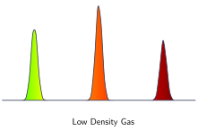

Jed Rembold
February 4, 2025
Scattered around the room are ~4 different gas lamps, each with a different type of gas
Given the descriptions below, can you identify which is corresponds to which gas?
| Gas | Description |
|---|---|
| Hydrogen | Two strong lines, one red, one greenish-blue, and a weaker blue-violet |
| Nitrogen | Broad red and violet lines, strong green and yellow |
| Mercury | Strong yellow, green, and violet lines, numerous weaker red lines |
| Chlorine | Strong and evenly narrow lines at ROY-G-BIV |

For our purposes: \[ \frac{\lambda_{obs} - \lambda_{rest}}{\lambda_{rest}} = \frac{V}{c} \] where: